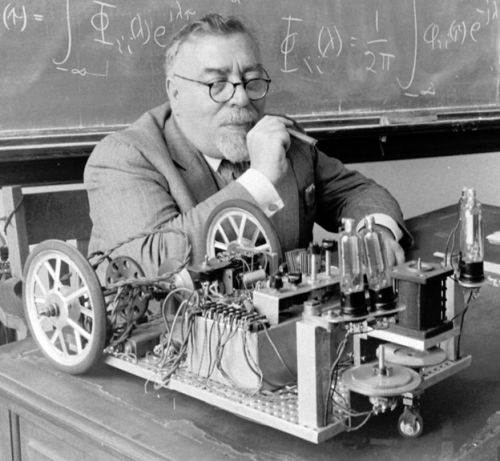
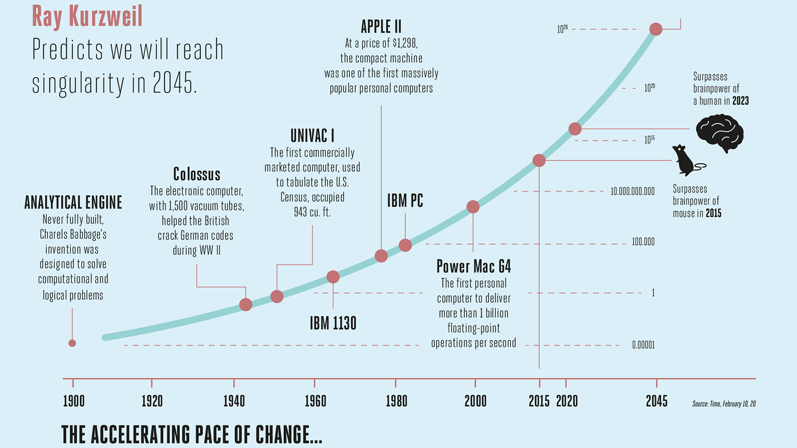
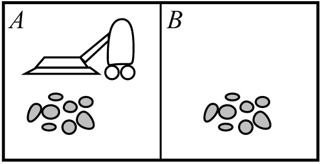

Программные среды проектирования интеллектуальных систем
Лекция №1
Интеллектуальные системы, агенты и поисковые алгоритмы
Казарян Д.Э.
Искусственный интеллект (ИИ)

Джон МакКарти (1927 — 2011)
«Интеллект состоит из двух частей [...]: представлений о мире в форме фактов, из которых можно вывести решение задачи, [...] и алгоритма, решающего эту задачу на основе этих фактов»
Что понимают под термином ИИ?
- Моделирование человеческого поведения
- Моделирование человеческого мышления
- Моделирование разумного поведения ???
- Моделирование рационального поведения
- Конкретные прикладные алгоритмы
Интеллектуальные системы
- Имеют цели и знания о среде, могут в ней полезно действовать
- Моделируют поведение человека
- Обрабатывают информацию для достижения цели
- Умеют обучаться
- Умеют подстраиваться под изменения среды
Кибернетика — начало интеллектуальных систем
Норберт Винер (1894 — 1964)
Концепция технологической сингулярности
Интеллектуальные агенты
Агент – система, которая получает из среды сигналы с помощью датчиков и действует в этой среде на основе знаний о ней и получаемых данных.

Мир пылесоса
Классическая задача из книги «Искуственный интеллект. Современный подход» (Рассел, Норвиг).
Воспринимает состояние среды и реагирует действием
Рациональные агенты
Рациональный агент для любого воспринятого состояния среды действует наилучшим возможным образом.
Модель мира
Поисковые алгоритмы
- В рассматриваемых поисковых алгоритмах пространсттво состояний среды представляется в виде орграфа
- В узлах расположены всевозможные состояния среды
- Дуги определяют переходы между состояниями и их стоимость
- Стоимость зависит как от среды, так и от эвристики агента